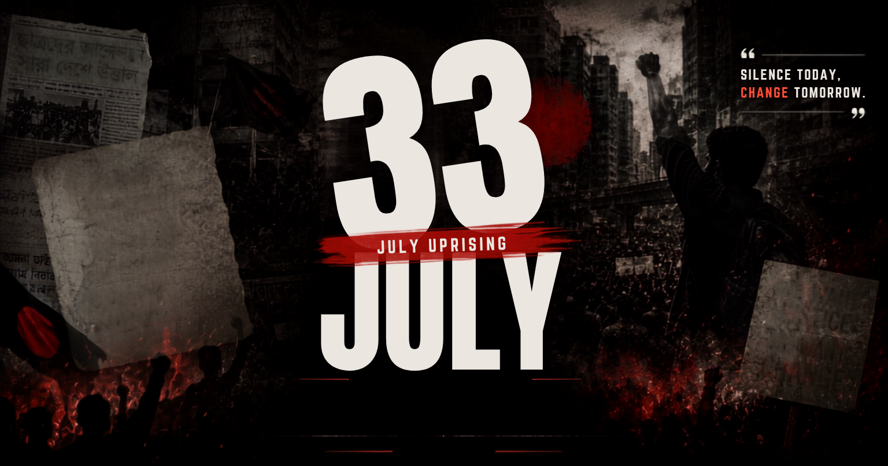

ISTIACK'S JULY CORNER
Read in Bangla/ইংরেজিতে পড়ুন
Read in Bangla/ইংরেজিতে পড়ুন
Share Link
Download / Print

Image: ./t.png
'">
Document Actions
Print Options
Please select the language version you wish to print or download as PDF.
English Version
Bangla Version
Both (English & Bangla)
Canonical URL copied to clipboard.